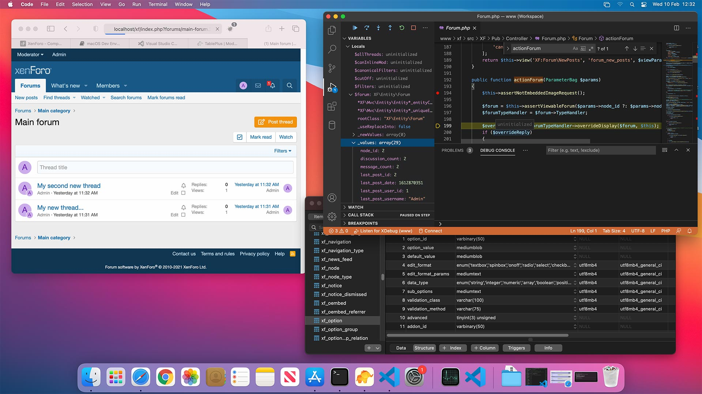
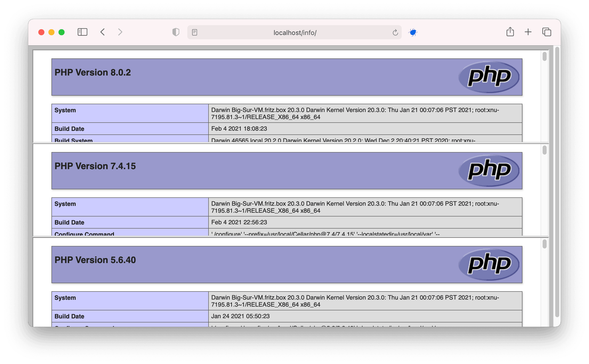
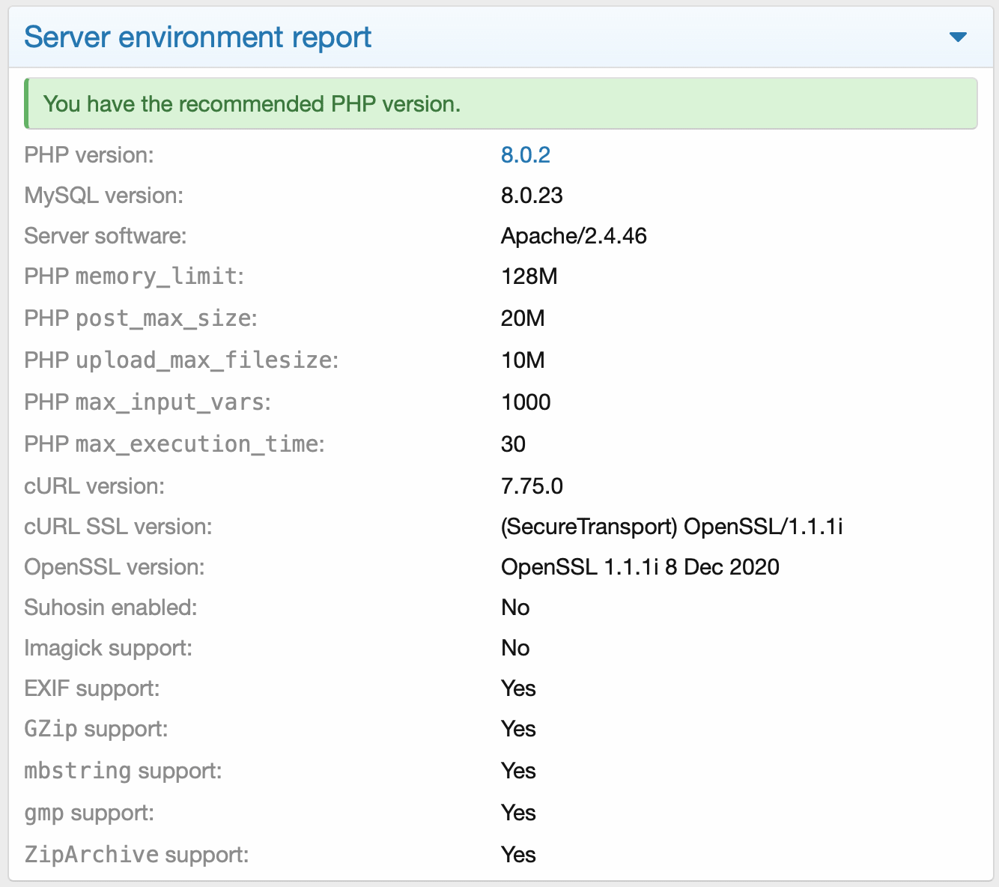

Среда разработки на macOS с параллельными версиями PHP
Чтобы получить максимальную отдачу от фреймворка XenForo, вам понадобится локальный веб-сервер, способный запускать XenForo, а также способный отладчик и редактор кода, который понимает код и может помочь вам обойти его.
К счастью, эти требования теперь легко выполнить, и они ничего вам не будут стоить.
Этот документ и сопровождающее его видео помогут вам начать работу на Macintosh под управлением macOS 11 Big Sur или более поздней версии. Если вы хотите пропустить пояснения, вы можете пропустить документ и просто прочитать summary.
В качестве бонуса этот подход позволит вам запускать несколько версий PHP одновременно, поэтому вы можете запускать экземпляры XenForo 1.5 на PHP 5.6, XenForo 2.1 на PHP 7.4 и XenForo 2.2 на PHP 8.0, если вы хотели без необходимости вручную переключать версию PHP, когда вы хотите получить доступ к определенной версии. Подробнее об этом позже.
Note
Вы должны войти в macOS с учетной записью пользователя с правами администратора, чтобы выполнить действия, описанные в этом документе.
Homebrew
Homebrew - это менеджер пакетов для macOS, который обеспечивает относительно простой способ установки всех компонентов, необходимых для запуска локального веб-сервера и сервера базы данных. Он также может намного больше, но это выходит за рамки этого документа.
Одна замечательная вещь в Homebrew заключается в том, что он устанавливает свои пакеты в единое дерево каталогов, поэтому он хорошо изолирован от остальной части вашего Mac, что делает обслуживание и удаление гораздо менее болезненными, чем другие методы.
Хотя установка выполняется из командной строки, не позволяйте этому оттолкнуть вас, потому что результаты того стоят.
В качестве дополнительного бонуса буквально сейчас, когда я пишу это, Homebrew анонсировала версию 3.0 с поддержкой Apple Silicon.
Инструменты командной строки Xcode
Чтобы установить Homebrew, нам нужно получить некоторые инструменты разработчика от Apple.
Xcode это Apple IDE для разработки приложений для macOS и iOS. Он включает в себя широкий спектр инструментов командной строки, необходимых для общей сборки приложений, и, что полезно, они доступны в виде отдельного пакета без необходимости установки всего пакета Xcode.
Откройте окно Терминал на вашем Mac и введите следующую команду:
sudo xcode-select --install;
Вам будет предложено ввести пароль в командной строке, а затем откроется окно установки, которое позволит вам загрузить и установить инструменты.
Note
Вам следует запускать эту команду снова всякий раз, когда вы устанавливаете обновление macOS, потому что иногда ваш Mac не сохраняет инструменты командной строки в процессе обновления.
Установка Homebrew
В окне терминала введите следующую команду:
/bin/bash -c "$(curl -fsSL https://raw.githubusercontent.com/Homebrew/install/master/install.sh)";
Просмотрите вывод и подтвердите при необходимости.
Установка пакетов Homebrew
Теперь пора использовать Homebrew для установки некоторых пакетов. Мы собираемся дать Homebrew некоторую информацию о некоторых дополнительных источниках пакетов, а затем установить (почти) все, что нам нужно, с помощью одной длинной команды.
PHP, Apache, MariaDB, ElasticSearch, Mailhog, ImageMagick
Следующая команда установит три версии PHP, Apache HTTP Server, MariaDB (который мы будем использовать в качестве нашего механизма MySQL), ElasticSearch, MailHog и ImageMagick.
Если вы предпочитаете установить MySQL, а не MariaDB, прочтите это примечание.
brew tap elastic/tap;
brew tap shivammathur/php;
brew install pkg-config mariadb httpd mailhog imagemagick elastic/tap/elasticsearch-full shivammathur/php/php@5.6 shivammathur/php/php@7.4 shivammathur/php/php@8.0;
Выполнение этой команды займет несколько минут, так как здесь нужно установить много программного обеспечения, но все хорошее достается тем, кто ждет...
Несколько версий PHP с Xdebug и ImageMagick
Как я сказал ранее, этот процесс предоставит возможность запускать несколько версий PHP одновременно, без необходимости запускать скрипт для переключения между ними.
Выполните следующие команды, чтобы развернуть Xdebug и ImageMagick в каждой установленной вами версии PHP.
brew unlink php;
brew link --force php@5.6;
pecl install xdebug-2.5.5;
printf "\n" | pecl install imagick;
brew unlink php@5.6;
brew link --force php@7.4;
pecl install xdebug;
printf "\n" | pecl install imagick;
brew unlink php@7.4;
brew link --force php@8.0;
pecl install xdebug;
printf "\n" | pecl install imagick;
Опять же, загрузка и установка всего необходимого программного обеспечения займет несколько минут.
Note
На момент написания ImageMagick не работает должным образом с PHP 8, но я оставил команду на месте, так как это могло измениться к тому времени, когда вы запускаете команды. Если команда pecl install imagick не работает для PHP 8, вы можете вручную создать расширение imagick.

Настройка
Насколько это возможно, мы постараемся минимизировать количество изменений, которые мы вносим в файлы конфигурации по умолчанию для каждого программного компонента, и вместо этого попросим сервер просмотреть дополнительные файлы конфигурации с нашими собственными конкретными инструкциями в них.
Note
Конфигурации, которые я показываю здесь, содержат мое собственное имя пользователя macOS, kier, но в каждом случае вам нужно будет заменить kier своим собственным именем пользователя. Если вы не уверены, какое у вас имя пользователя Mac, используйте команду whoami в окне Терминала.
MariaDB
Теперь нам нужно запустить MariaDB.
В окне терминала введите следующие команды:
brew services start mariadb;
sudo /usr/local/bin/mysql_upgrade;
Вам будет предложено ввести root-пароль MySQL - его еще нет, поэтому просто нажмите Enter, когда будет предложено.
Следующий:
sudo /usr/local/bin/mysql_secure_installation;
Вы можете нажать Enter, чтобы принять значения по умолчанию для большинства вопросов, которые будет задавать этот скрипт, за исключением пароля root, который вам нужно будет установить. Поскольку это только установка для разработки, можно использовать пароль root.
Apache
Начните с редактирования следующего файла: /usr/local/etc/httpd/httpd.conf
Оставьте все содержимое файла конфигурации без изменений, но в самом конце файла добавьте следующую строку:
Include /usr/local/etc/httpd/extra/httpd-dev.conf
Теперь создайте и отредактируйте файл /usr/local/etc/httpd/extra/httpd-dev.conf
И в него добавьте следующее содержимое:
User kier
Group staff
Listen 80
ServerName localhost
Timeout 3600
LoadModule vhost_alias_module lib/httpd/modules/mod_vhost_alias.so
LoadModule rewrite_module lib/httpd/modules/mod_rewrite.so
LoadModule deflate_module lib/httpd/modules/mod_deflate.so
LoadModule mime_magic_module lib/httpd/modules/mod_mime_magic.so
LoadModule expires_module lib/httpd/modules/mod_expires.so
LoadModule proxy_module lib/httpd/modules/mod_proxy.so
LoadModule proxy_http_module lib/httpd/modules/mod_proxy_http.so
LoadModule proxy_fcgi_module lib/httpd/modules/mod_proxy_fcgi.so
<IfModule dir_module>
DirectoryIndex index.html index.php
</IfModule>
<VirtualHost *:80>
DocumentRoot "/Users/kier/Documents/www"
<Directory "/Users/kier/Documents/www">
Options Indexes FollowSymLinks
AllowOverride all
Require all granted
</Directory>
<FilesMatch \.php$>
SetHandler "proxy:fcgi://localhost:9080"
</FilesMatch>
</VirtualHost>
Note
Предполагая, что вы измените три экземпляра kier на свое собственное имя пользователя, эта конфигурация будет ожидать обслуживания ваших веб-файлов из каталога www в вашей папке Documents. Вам нужно будет создать этот каталог или изменить оба экземпляра пути в конфигурации, если вы хотите обслуживать из другого каталога.
PHP
Каждая версия PHP требует собственных изменений конфигурации, но, к счастью, они незначительны.
Xdebug и Mailhog
Нам нужно установить некоторые разумные значения по умолчанию и включить Xdebug для каждой версии PHP.
Начните с редактирования файлов php.ini files at /usr/local/etc/php/5.6/php.ini, /usr/local/etc/php/7.4/php.ini и /usr/local/etc/php/8.0/php.ini и удалите все строки в верхней части файла, ссылающиеся на xdebug или imagick, затем сохраните файлы.
Затем создайте, отредактируйте и сохраните следующие три файла ini с указанным содержимым для каждого:
/usr/local/etc/php/5.6/conf.d/php-dev.ini
post_max_size = 20M
upload_max_filesize = 10M
date.timezone = UTC
[mailhog]
smtp_port = 1025
sendmail_path = "/usr/local/bin/mhsendmail"
[xdebug]
zend_extension = "xdebug.so"
xdebug.remote_enable = 1
xdebug.remote_connect_back = 1
xdebug.remote_port = 9000
[imagick]
extension = "imagick.so"
/usr/local/etc/php/7.4/conf.d/php-dev.ini и /usr/local/etc/php/8.0/conf.d/php-dev.ini
post_max_size = 20M
upload_max_filesize = 10M
date.timezone = UTC
[mailhog]
smtp_port = 1025
sendmail_path = "/usr/local/bin/mhsendmail"
[xdebug]
zend_extension = "xdebug.so"
xdebug.mode = "debug,develop"
xdebug.discover_client_host = 1
xdebug.client_port = 9000
[imagick]
extension = "imagick.so"
Warning
На момент написания pecl install imagick некорректно работал с PHP 8. Если вы получаете ошибки при попытке запустить эту команду, и вы не хотите создавать расширение imagick вручную, тогда вам нужно будет закомментировать строку extension = "imagick.so" из PHP 8 php-dev.ini, добавив начальную точку с запятой.
Fast CGI (php-fpm)
Мы собираемся использовать реализацию PHP FastCGI Process Manager (FPM), чтобы разрешить переключение версий, но сначала нам нужно сообщить каждой версии PHP, как реагировать, чтобы мы могли запускать несколько версий одновременно.
Создайте следующий файл, затем введите и сохраните содержимое, указанное ниже, изменив имя пользователя на свое:
/usr/local/etc/php/5.6/php-fpm.d/x.conf
user = kier
group = staff
listen = 127.0.0.1:9056
Обратите внимание на использование порта 9056. Я получил 9056, удалив десятичную точку из номера версии PHP 5.6 и добавив конкатенированное значение 56 к 9000, в результате чего получилось 9056.
Затем вам нужно будет скопировать этот файл в следующие места, при необходимости изменив номер порта:
/usr/local/php/7.4/php-fpm.d/x.conf (используя порт 9074)
/usr/local/php/8.0/php-fpm.d/x.conf (используя порт 9080)
В то время как PHP 7.4 и 8.0 будут лишать нашу недавно заданную конфигурацию FPM, PHP 5.6 требуется небольшая помощь. Отредактируйте файл /usr/local/etc/php/5.6/php-fpm.conf и в самом низу файла добавьте следующее:
include=/usr/local/etc/php/5.6/php-fpm.d/*.conf
Авто-старт
Теперь, когда все настроено, мы можем запустить серверы и дать им указание загружаться при запуске системы.
brew services start elasticsearch-full;
brew services start php@5.6;
brew services start php@7.4;
brew services start php@8.0;
brew services start httpd;
Выбор версии PHP
Это умная часть. Мы можем проинструктировать Apache передавать скрипты PHP в любую из установленных нами версий PHP с небольшой конфигурацией в файле .htaccess.
В конфигурации, которую мы создали выше, сервер по умолчанию будет использовать PHP 8.0, но это легко переопределить для каждого каталога отдельно.
В папке Documents/www создайте следующее дерево папок и файлов (или загрузите этот zip файл, содержащий то же содержимое):
- Documents
- www
- info
- php5.6
- info.php
- php7.4
- info.php
- php8.0
- info.php
- php5.6
- info
- www
В каждый из этих файлов index.php, добавьте следующее содержимое:
<?php
phpinfo();
Если вы посетите любое из этих мест с помощью своего браузера, вы увидите PHP 8.0, указанную как используемую версию.
Note
Поскольку мы поместили каталог www в вашу папку Documents, что дает некоторые преимущества, такие как потенциально автоматическое резервное копирование вашей папки www в iCloud, это также вызовет несколько раздражающие запросы разрешения, когда Apache и каждая версия PHP сначала попытаются получить доступ к каталогу www. Просто следите за подсказками и подтверждайте их, когда они появляются.
Затем создайте файл .htaccess в каталоге каждой версии php вместе с файлом info.php и добавьте следующее содержимое:
.htaccess для PHP 5.6
<FilesMatch \.php$>
SetHandler "proxy:fcgi://localhost:9056"
</FilesMatch>
.htaccess для PHP 7.4
<FilesMatch \.php$>
SetHandler "proxy:fcgi://localhost:9074"
</FilesMatch>
.htaccess для PHP 8.0
<FilesMatch \.php$>
SetHandler "proxy:fcgi://localhost:9080"
</FilesMatch>
Обратите внимание на использование наших номеров портов из нашей конфигурации FPM здесь.
С этими файлами обновление информационных страниц PHP для любого из этих каталогов версии PHP должно показывать правильную версию PHP. Любые файлы PHP, обслуживаемые из этих каталогов, также должны использовать ту же версию PHP.
Теперь вы можете свободно разбросать эти файлы .htaccess по вашему каталогу www, чтобы любой каталог выбирал любую версию PHP по вашему выбору.

Note
Файлы .htaccess в загружаемом zip закомментированы директивой SetHandler, вам нужно будет удалить начальный символ # из этой строки, прежде чем директива будет работать.
IDE, отладка и менеджер БД
Чтобы получить максимальную отдачу от этого мощного программного пакета для веб-серверов, который вы сейчас собрали, важно выйти за рамки простого текстового редактора для ваших нужд кодирования.
Ознакомьтесь с нашим разделом Visual Studio Code и его использование с Xdebug.
Ссылки на ресурсы
Обобщение
Сводка команд терминала
#!/bin/bash
# установить инструменты разработки командной строки macOS
sudo xcode-select --install;
# установить homebrew
/bin/bash -c "$(curl -fsSL https://raw.githubusercontent.com/Homebrew/install/master/install.sh)";
# дополнительные источники пакетов homebrew
brew tap elastic/tap;
brew tap shivammathur/php;
# установить пакеты homebrew
brew install pkg-config mariadb httpd mailhog imagemagick elastic/tap/elasticsearch-full;
# установить php 5.6
brew install shivammathur/php/php@5.6;
pecl install xdebug-2.5.5;
printf "\n" | pecl install imagick;
# установить php 7.4
brew install shivammathur/php/php@7.4;
pecl install xdebug;
printf "\n" | pecl install imagick;
# установить php 8.0
brew install shivammathur/php/php@8.0;
pecl install xdebug;
# эта команда не работает с PHP 8.0 на момент написания
printf "\n" | pecl install imagick;
# запустить и настроить mariadb
brew services start mariadb;
sudo /usr/local/bin/mysql_upgrade;
sudo /usr/local/bin/mysql_secure_installation;
#
# На этом этапе отредактируйте файлы конфигурации для Apache и PHP,
# смотрите «Сводку конфигурации» ниже.
#
# запустить остальные сервисы
brew services start elasticsearch-full;
brew services start php@5.6;
brew services start php@7.4;
brew services start php@8.0;
brew services start httpd;
Сводка конфигурации
Сделайте следующие правки
Отредактируйте следующие файлы, как описано:
В конце /usr/local/etc/httpd/httpd.conf, добавьте
Include /usr/local/etc/httpd/extra/httpd-dev.conf
В /usr/local/etc/php/ отредактируйте файлы 5.6/php.ini, 7.4/php.ini и 8.0/php,ini, найдите строки расширений imagick.so и xdebug.so в верхней части файла, и если они существуют, закомментируйте их следующим образом:
; extension="imagick.so"
; zend_extension="xdebug.so"
В конце /usr/local/etc/php/5.6/php-fpm.conf, добавьте
include=/usr/local/etc/php/5.6/php-fpm.d/*.conf
Добавьте следующие файлы
Загрузите связанные файлы и поместите их в указанные каталоги, создав содержащий каталог, если он еще не существует, и заменив экземпляры моего имени пользователя kier своим собственным именем пользователя macOS. Найдите свое собственное имя пользователя, запустив whoami в терминале:
/usr/local/etc/httpd/extra/httpd-dev.conf/usr/local/etc/php/5.6/conf.d/php-dev.ini/usr/local/etc/php/5.6/php-fpm.d/x.conf/usr/local/etc/php/7.4/conf.d/php-dev.ini/usr/local/etc/php/7.4/php-fpm.d/x.conf/usr/local/etc/php/8.0/conf.d/php-dev.ini/usr/local/etc/php/8.0/php-fpm.d/x.conf
Файлы .htaccess, ориентированные на версии PHP
Следующие файлы можно поместить в каталог на вашем веб-сервере, чтобы все файлы PHP в этой папке использовали определенную версию PHP.
Переименуйте файлы из htaccess.txt в .htaccess после помещения их в папку назначения.
Примечание для пользователей CJK
Было указано, что MariaDB не особенно хорошо работает с языками CJK. Если поддержка CJK важна для вашего процесса разработки, вам следует заменить команды, ссылающиеся с mariadb на mysql, что приведет к установке MySQL 8.0 вместо этого.
В частности, команды, которые следует изменить:
# установить пакеты, включая MariaDB:
brew install pkg-config mariadb httpd mailhog imagemagick elastic/tap/elasticsearch-full shivammathur/php/php@5.6 shivammathur/php/php@7.4 shivammathur/php/php@8.0;
# вместо этого установите пакеты, используя MySQL:
brew install pkg-config mysql httpd mailhog imagemagick elastic/tap/elasticsearch-full shivammathur/php/php@5.6 shivammathur/php/php@7.4 shivammathur/php/php@8.0;
# запустить сервис MariaDB
brew services start mariadb
# вместо этого запустите сервис MySQL
brew services start mysql

Создавайте Imagick вручную
В случае, если стандартная команда pecl install imagick не работает для PHP 8, что она и делает на момент написания, можно установить расширение imagick.so, собрав его вручную, что не так сложно. может звучать.
Найдите на вашей рабочей станции место для работы - я обычно создаю для этой цели каталог с именем /usr/local/build и cd в этот каталог. Оказавшись там, выполните следующие команды::
brew link --force --overwrite php@8.0
git clone https://github.com/Imagick/imagick
cd imagick
phpize && ./configure
make
make install
Предполагая, что проблем не возникло, это должно было поместить недавно созданный imagick.so в правильный каталог модулей, а именно /usr/local/lib/php/pecl/20200930/imagick.so, где 20200930 представляет собой номер сборки вашей версии PHP 8.
На этом этапе директива extension = "imagick.so" в вашем файле /usr/local/etc/php/8.0/conf.d/php-dev.ini автоматически найдет правильное расширение при запуске PHP. 8.